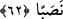

nisbet edilmesi, bu tefsire ters düşmez.
el-Es’iletü’l-mukhime’de der ki: “Balığı, her ikisi de yol azığı için almışlardı.
Bundan dolayı her ne kadar unutan sadece biri yanî Yûşâ (a.s.) olsa da balığın ikisine
izâfeti câizdir. Mesela “Bir topluluk, azıklarını yüklenerek çıktılar...” denir. Halbuki
azığı onlardan sadece birisi veya bir kısmı yüklenir.
“Balık, denizde bir yol tutup gitmişti.” “__WORD__ Serab”, altında delik olan ev, gizli yol
anlamlarına gelir. Ancak bu tünel demek değildir. Çünkü dışarıya çıkışı olursa “tünel”
ismi verilir; şâyet dışarıya çıkışı yoksa ona “serab” denir. Allah Teâlâ, suyun balığın
üzerinden akmasına engel olduğu için onun üzerinde tâk gibi olmuştur. Sanki binânın üst
kısmı birbirine bağlanıp da altı boş kalan kemer gibi bir şekle dönmüştür. Yâni su,
balığın giriş yolundan çekilmiş, iki tarafı birbirine bitişmeyen bir menfez gibi olmuştur.
Rasûlullah (s.a.) bu makamı Sahîhayn’daki bir hadiste böyle açıklamıştır.
“Serab” kendisinden gitmek mümkün olan yer altı mahzeni gibidir. O pişmiş balık ne
tarafa gitse su onun üzerinde yükselirdi ve yer kuru kalırdı. Dolayısıyla Kadı Beyzâvî
ve ona tâbî olan bazı müfessirlerin “sereb” lafzını; “__WORD__ sâribün bi’n-nehâr”
(er-Ra‘d, 13/10) yâni yerde yüzüstü giden ifâdesindeki “sâribün” kelimesinden istidlal
ederek “oraya girip gittiği yol” diye tefsir etmeleri doğru değildir.
62. (Buluşma yerlerini) geçip gittiklerinde Mûsâ genç adamına: Kuşluk
yemeğimizi getir bize. Hakîkaten şu yolculuğumuz yüzünden başımıza (epeyce)
sıkıntı geldi, dedi.
“(Buluşma yerlerini) geçip gittiklerinde” yâni, karşılaşma için vaad edilen iki
denizin birleştiği yeri geçtiklerinde… O gün ve gecenin geri kalan kısmında yürüdüler.
Ertesi gün olunca Mûsâ (a.s.)’a, balığı hatırlayıp istediği yere dönmesi için, açlık hissi
verildi. İşte o zaman “Mûsâ genç adamına: Kuşluk yemeğimizi getir bize.”
Hizmetçinin cevabından da anlaşıldığı gibi bu yiyecek balıktır. “Hakîkaten şu
yolculuğumuz” yâni Allah’a yemin olsun ki iki denizin birleştiği yeri geçtikten sonra
yürüdüğümüz bu yolculuk “yüzünden başımıza (epeyce) sıkıntı” yâni yorgunluk ve
meşakkat “geldi, dedi.” Nevevî der ki: Mûsâ (a.s.)’a yorgunluk ve açlık, yemeği istesin
ve böylece Yûşa (a.s.) ona balığı hatırlatsın diye isâbet etmiştir. Nitekim bir hadiste
şöyle buyrulmuştur: “Mûsâ, Allah’ın (Hızır’la buluşmasını) emrettiği yeri geçinceye
kadar sıkıntı hissetmedi.”[199]
el-Es’iletü’l-mukhime’de der ki: “Mûsâ (a.s.), bu yolculuğunda nasıl acıktı ve
yoruldu? Tâyin edilen vakitte (mîkât) Tûr’a çıkınca otuz gün acıkmamış ve
yorulmamıştı. Denilmiştir ki: Bu sefer, te’dib, ilim talebi ve meşakkatlere tahammül